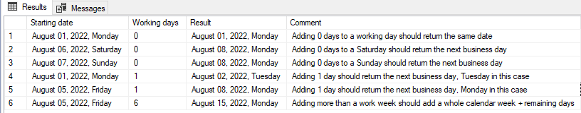

Adding business days to a date using SQL
Recently I had a task that seemed very simple at first. I had a table with billing start dates and number of business days to bill. The task was to calculate the end date for each row. Basically to calculate the start date + number of business days without having to worry about holidays.
I was surprised that there is no built-in solution for this seemingly common problem. Here is my own take on the problem.
The logic is quite simple:- for each 5 working days add an entire calendar week to the starting date
- after adding the whole weeks add the remaining days (for example adding 8 days means adding 1 week and 3 days)
- if the resulting date is a Saturday then add 2 more days
- if the resulting date is a Saturday then add 1 more day
create function addWorkingDays(@startDate datetime, @workingDays int) returns datetime as begin if @workingDays = 0 return @startDate declare @calendarDays int = (@workingDays / 5) * 7 + -- add whole weeks (@workingDays % 5) -- add remaining days declare @resultDate datetime = dateadd(d, @calendarDays, @startDate) declare @dayOfWeek int = ((datepart(DW, @resultdate) - 1) + @@datefirst ) % 7 --the @@datefirst part is needed if you are outside of US where 0 is Monday return case when @dayOfWeek = 0 then --Sunday dateadd(d, @calendarDays, @startDate) + 1 when @dayOfWeek = 6 then -- Saturday dateadd(d, @calendarDays, @startDate) + 2 else dateadd(d, @calendarDays, @startDate) end end
The bellow table lists a few test cases: Your feedback is welcome! Please let me know if you think there is something important that should be included in this post or if you find anything wrong!
Comments available on dev.to